macOS
Apple silicon
Disk image, 61 MB
Open it and drag Monocard to Applications.
macOS 13.4 or later. Notarized.
0.3.0Early release: What’s new
Monocard is a free, open source raw editor for cameras with no color filter on the sensor. It develops one channel, from the sensor data to the print. The first camera is the Ricoh GR IV Monochrome.
Download for macOS Version 0.3.0. macOS 13.4 or later, Apple silicon. Notarized. Also for Linux and Windows.
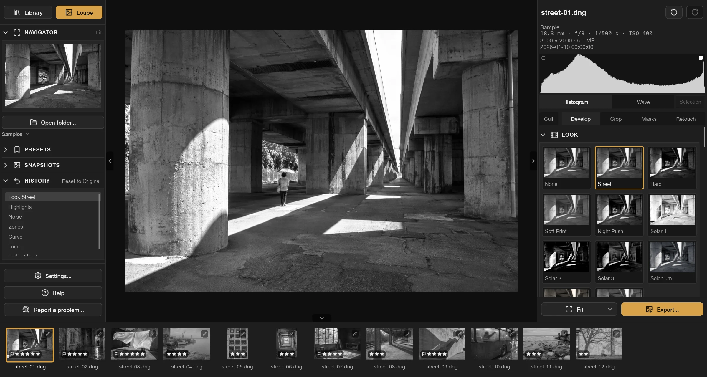
Key Z paints the picture in eleven zones, 0 to X, in equal steps of lightness. Zone V is the 18 % grey card. The scale at the edge of this page is the same one.
Drag the line across the frame. The picture is on its left, its zones on its right. Arrow keys move it when it has focus; a double click puts it back.Drag the line.
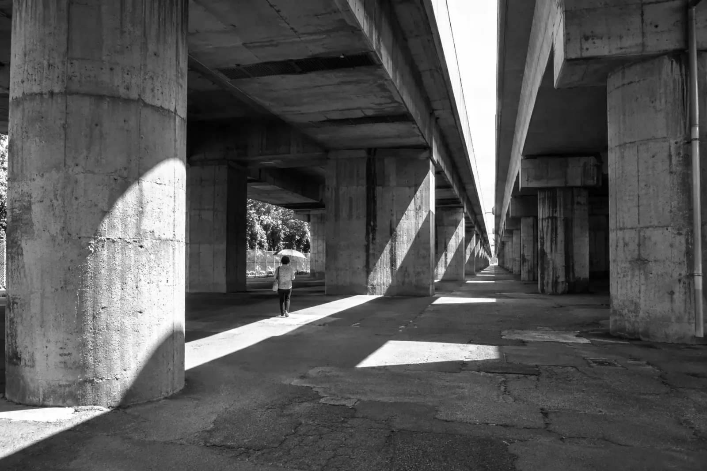
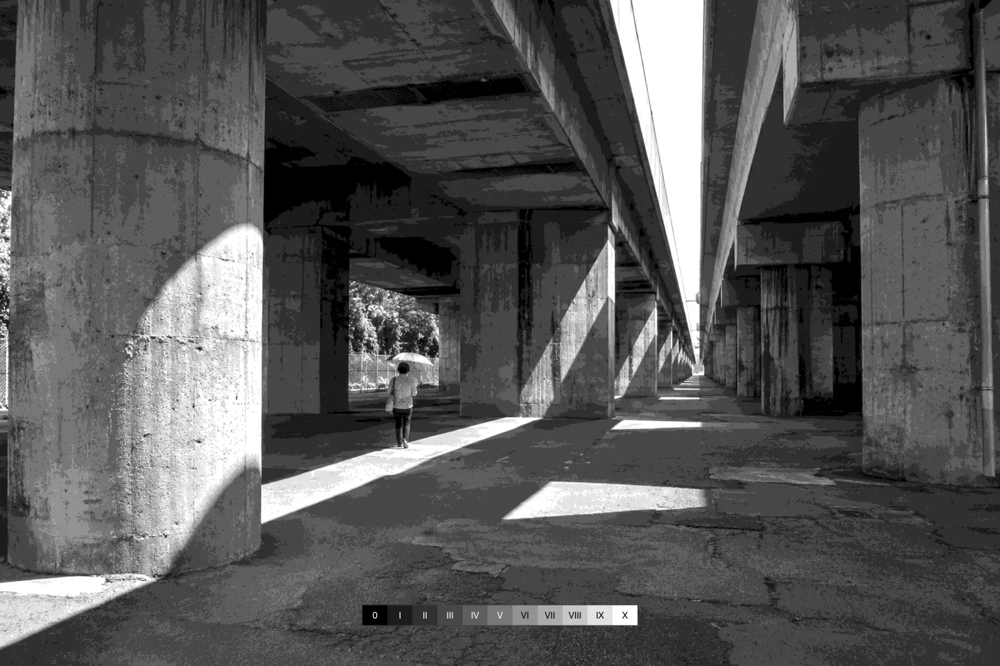
| Zone | 0 | I | II | III | IV | V | VI | VII | VIII | IX | X |
|---|---|---|---|---|---|---|---|---|---|---|---|
| L* | 0 | 10 | 20 | 30 | 40 | 50 | 60 | 70 | 80 | 90 | 100 |
| sRGB | 00 | 1b | 30 | 47 | 5e | 77 | 91 | ab | c6 | e2 | ff |
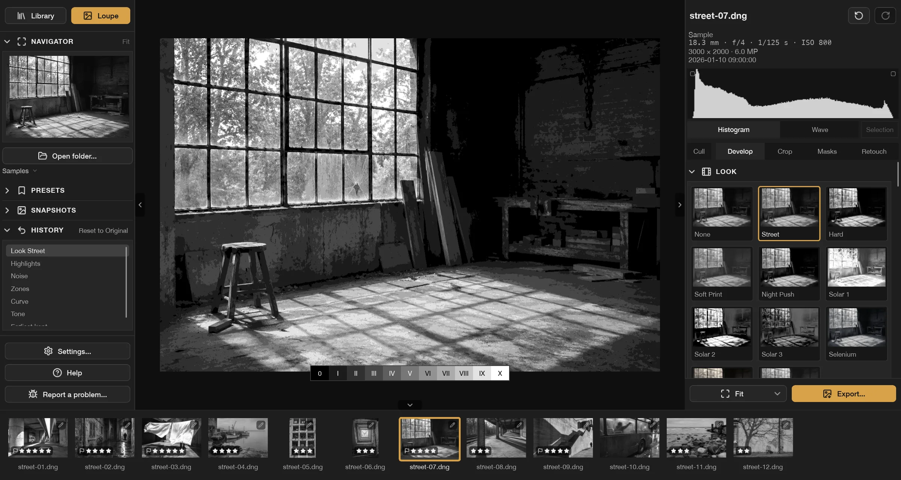
Denoise works from a noise model of the sensor at each ISO, on the one channel the sensor recorded. A slider keeps part of the sensor’s grain.
Dodge and burn by zone. The tone equalizer has nine zones, from −8 EV to 0 EV, and follows edges, to avoid halos. The curve and the LIGHT sliders stay on screen.
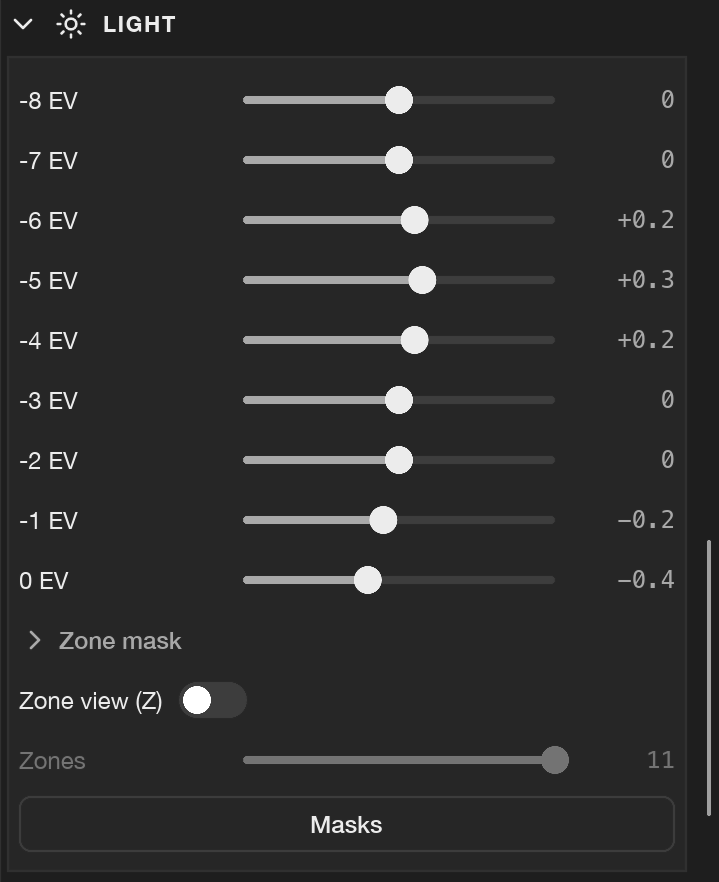
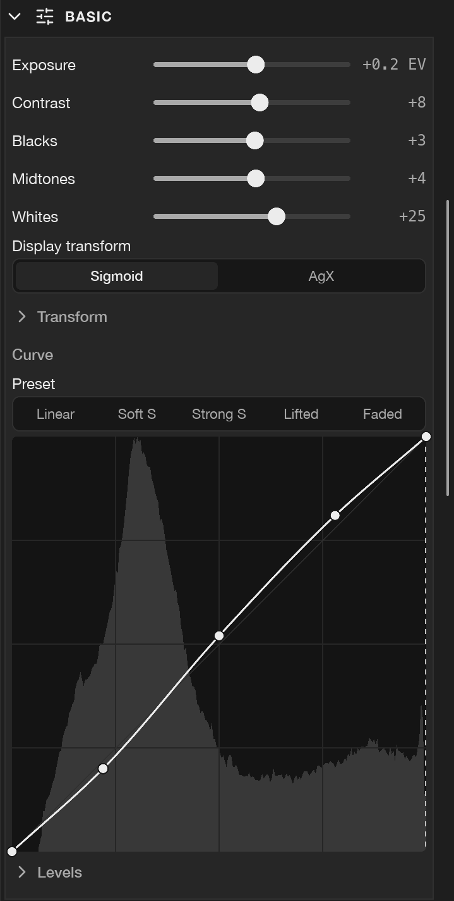
Contrast by scale, from fine texture to large forms, and sharpening at the sensor’s pixel pitch.
Clipped light is lost. A monochrome sensor has no other channel to take it from. Monocard shows what the sensor clipped and shapes the way into white.
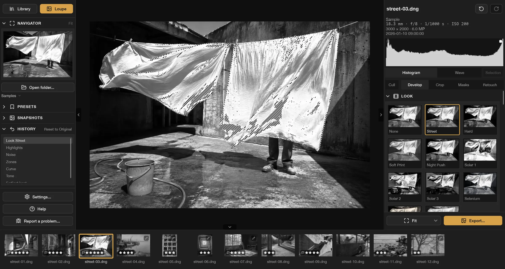
Five kinds of mask. Each drives exposure, the tone equalizer, the curve and local contrast.
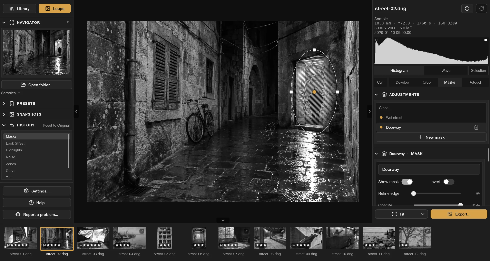
Ten looks, each a small text file, each editable after it is applied. Grain follows the tones. Toning and solarize are part of a look.
The frame below is one picture in eleven bands: no look, then the ten looks, in the order of the LOOK panel.
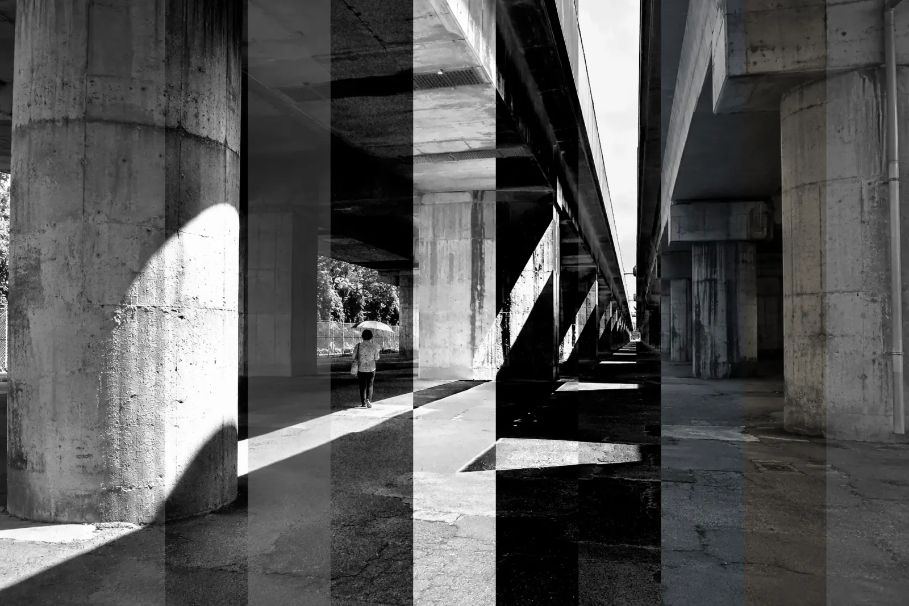
| Band | Look | What it does |
|---|---|---|
| 0 | No look | The develop alone. |
| 1 | Street | Neutral, full tonal range, a gentle shoulder. |
| 2 | Hard | Deep blacks, strong midtone contrast, fine grain. |
| 3 | Soft Print | Lifted blacks, paper white at 0.94, low contrast. |
| 4 | Night Push | Pushed film, for ISO 12800 and up. |
| 5 | Solar 1 | Tone reversed about the middle. |
| 6 | Solar 2 | Tone reversed at both ends. |
| 7 | Solar 3 | Tone reversed in the shadows. |
| 8 | Selenium | A cool tone in the shadows only. |
| 9 | Warm Fibre | A warm paper tone across the picture. |
| 10 | High Key | Bright and airy, few true blacks. |
| Solar 1 to 3 are drawn curves. The camera’s own Solarized modes are fitted separately: see Camera modes. | ||
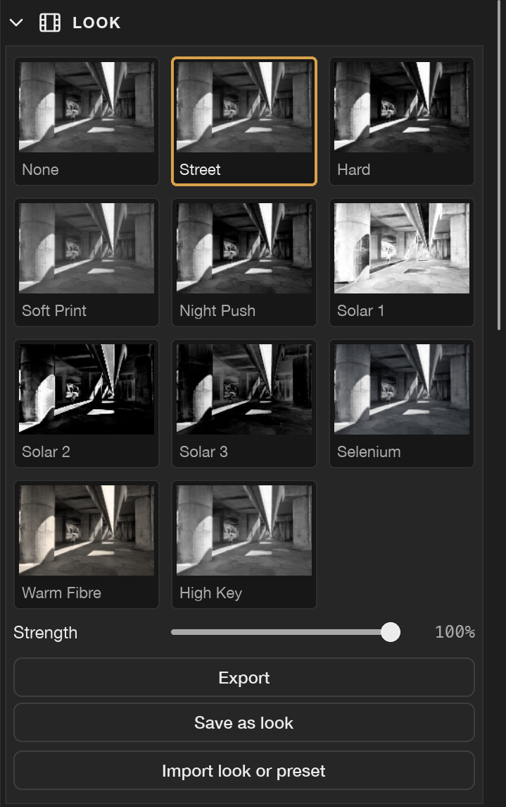
The camera’s own picture modes, as looks. Monocard reads the mode from the file. Each mode is fitted from pairs of a raw and the camera’s JPEG, and kept in a profile table with a test chart.
| Mode | State |
|---|---|
| Standard | Good |
| Solid | Good |
| Solarized 1 to 3 | Good |
| Soft | Draft |
| High Contrast | Draft |
| HDR Tone | Draft |
| Grainy | Missing: no photos yet |
| Good: fitted from real photos, within the limits. | |
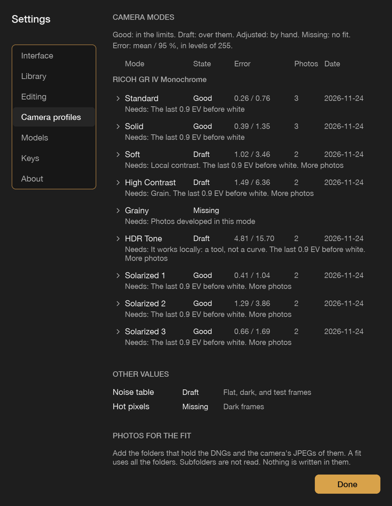
Connect the camera by USB and its window opens. It shows the photos on the camera in a grid, by day. Select the ones to keep and import them.

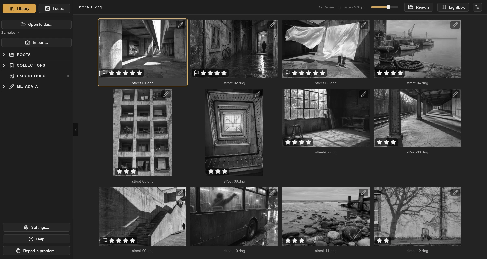
A picture that is not toned leaves as a grey file, one channel. The proof shows it within the white and the black of a paper.
IMG.DNG.mcd.monocard develops files with no window.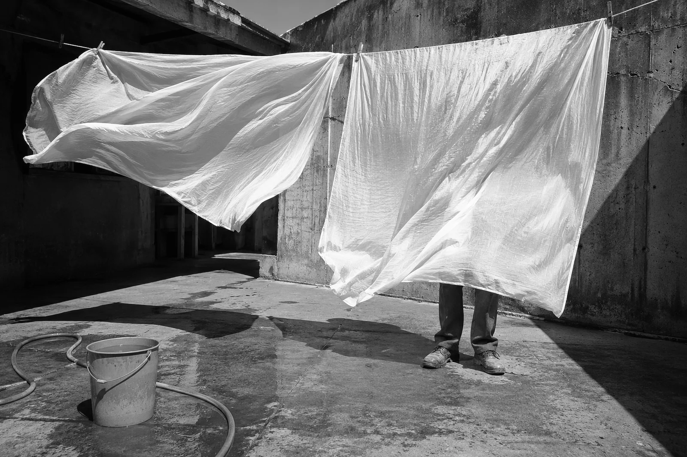
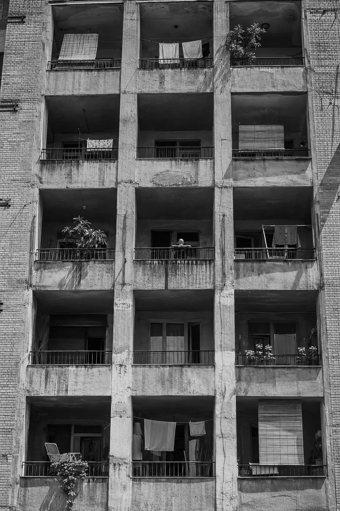
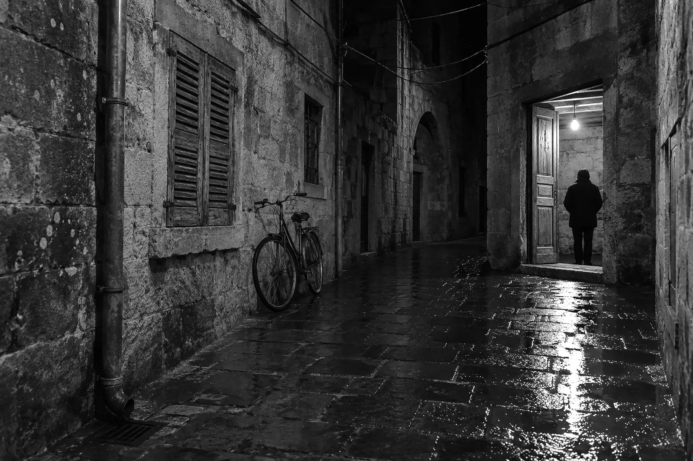
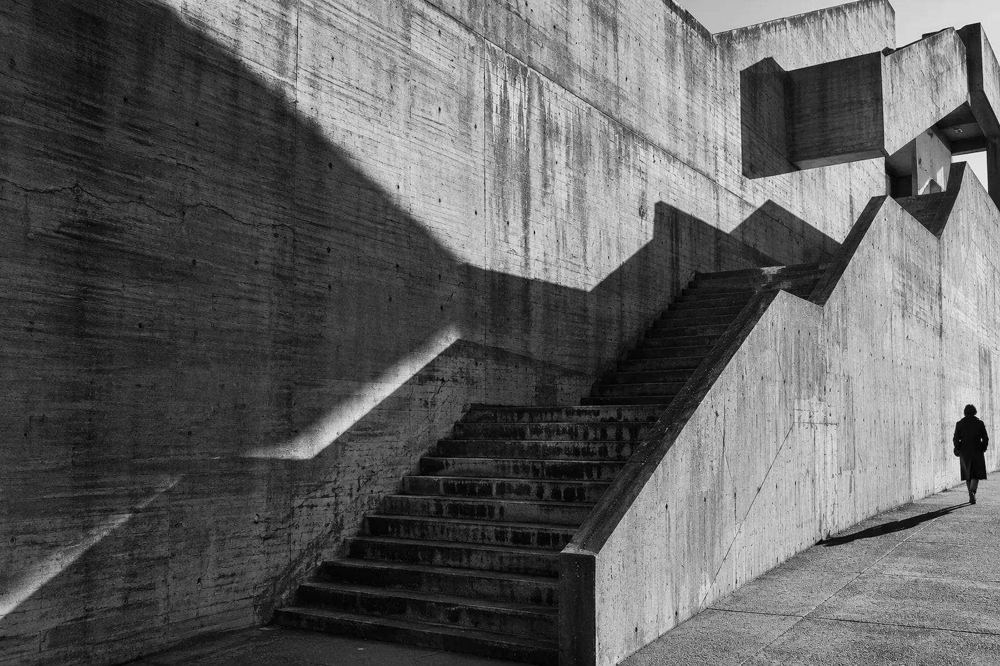
Four pictures developed in Monocard and exported as grey files.
Version 0.3.0, . Free.
Apple silicon
Disk image, 61 MB
Open it and drag Monocard to Applications.
macOS 13.4 or later. Notarized.
64-bit Intel and AMD
AppImage, 67 MB
Make it executable and run it. Or unpack the archive (70 MB) and run ./install.sh.
glibc 2.39 or later, Vulkan.
64-bit Intel and AMD
Zip, 77 MB
Unpack it and run bin\monocard-ui.exe.
Windows 10 or later. Not signed, so Windows asks before the first start.
The Linux and Windows versions are new and little tested. All releases and their notes.
Monocard is free and open source, under GPL-3.0. The code and the build notes are on GitHub.